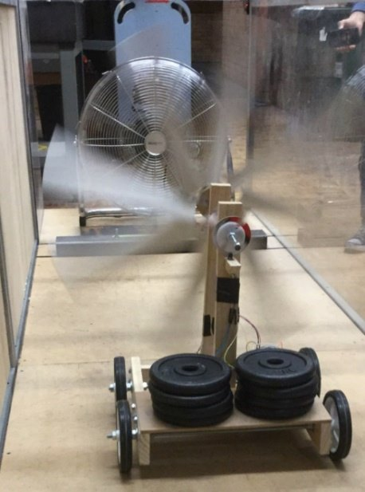

Project
Wind-Powered Vehicle
Introductory mechanical engineering prototype project with CAD/drawing context, report figures, prototype photos, and testing evidence.
Wind-powered vehicle project shown with report figures and a technical drawing PDF.
